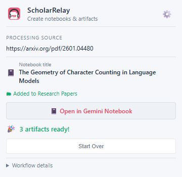

ScholarRelay
One streamlined workflow
From source to finished Gemini Notebook artifacts
Add a PDF or webpage, organize the notebook, and follow generation even after the popup closes.

Add a PDF or webpage, organize the notebook, and follow generation even after the popup closes.
